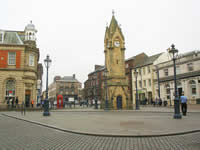
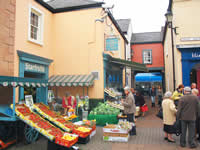
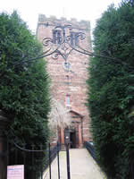
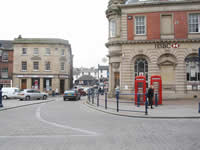

Penrith Tourist Information

Penrith is an ancient town with a long and varied history including Roman occupation, cross-border raids and burning, and plague in which more than 2000 inhabitants died. Despite the misfortunes, the town prospered, and by the 1700’s had become a cattle market of considerable importance.
{kind=link}

The narrow confines of the streets were deliberately created as a form of protection during the cross-border raids and to better control the cattle herding.
{kind=link}
Penrith Castle began life as a Pele Tower in 1399 and was developed into fortress size for the Duke of Gloucester who later became Richard 111 in 1483. He was to die two years later at the Battle of Bosworth when his army met that of Henry Tudor. Henry was crowned Henry V11 and so ended the War of the Roses. Richard has no known resting place.
By the 1500’s, the castle had fallen in to disrepair. The imposing sandstone remains stand on the town’s outskirts in Castle Park and opposite the North Lakes Railway Station. The tower of Saint Andrew's Church dates from the 13/14 th C.
The church contains much of historical interest. There are paintings by the Penrith born artist Jacob Thompson, and a candelabra presented by that man of fearsome reputation, the Duke of Cumberland, in recognition of Penrith’s loyalty during the Jacobite Rebellion.
It is reported that Bonnie Prince Charlie had lodgings in the towns George Hotel during his army’s march south in the attempt to seize the Crown.

The 1719 Signal Tower of Beacon Pike stands on Beacon Hill overlooking the town. Here, fires were lit to warn of invasion from across the border and also used during the Napoleonic Wars. Folklore has it that the ghost of a hanged felon roams the slopes. However, on a clear day, the pastoral views from the summit are glorious.
{kind=link}
Penrith was the home of William Wordsworth’s mother, and his grandfather, William Cookson owned a house in Devonshire Street, whose place is now occupied by a shop. William and Dorothy, his future wife, attended The Dame Birkett School.

Busy market days are Tuesdays and Saturdays and a Farmers Market once a month.
The Auction Mart held near to Junction 40 of the M6 is Cumbria’s biggest outdoor market.
{kind=link}
All Cumbria and The Lake District are easily reached from Penrith. The beautiful lakes of Haweswater and Ullswater are only a few miles distant and you can soon be in Windermere via the winding Kirkstone Pass, A6 or M6.
To the north lays the capital of Carlisle and close by, the symbolic Hadrians Wall. To the west is Keswick, Bassenthwaite Lake and Wordsworth’s birthplace of Cockermouth.
The Northern Fells of Carrock Fell, Bowscale Fell and Saddleback provide fine walking country, and cyclists will discover miles of quiet tracks in the surrounding countryside.
How to get there:
By rail: The West Coast Main Line from London to Scotland has a station at Penrith.
By road: Penrith is easily reached by exiting at J40 of the M6 motorway.
Or travel across country from the A1 along the A66.
Penrith Tourist Information Centre
The Centre is housed alongside the museum in Middlegate. It stocks a wide range of walking and
cycling leaflets, bus and train timetables and much more.
Opening times are 9.30am till 5pm from Monday to Saturday and 11am till 4pm on Sundays.
Telephone: 01768 867466.
Email: pen.tic@eden.gov.uk
Attractions in Penrith |
Aira Force Waterfall (Ullswater)
Stunning scenery and a walkers paradise. Walks to Aira Force give you views across Ullswater and link with wider walks around Gowbarrow Fell.
Watermillock, Penrith, Cumbria
Phone: 017684 82881
Brougham Castle
Early 13th C castle, built to evade Scots invaders, restored by Lady Anne Clifford. Dogs must be kept on leads. Beautiful riverside location next to the River Eamont.
1.5 miles south of Penrith.
Phone: 01768 862488
Lowther Castle
Situated 5 miles south of Penrith on the A6, the castle and gardens are open to the public every day from 10am till 5pm. (last entry at 4pm) It's an ideal family day out. Accompanied children under the age of 16 enter free and well behaved dogs on leads are welcome. Children have the freedom to run and play in the extensive grounds with woods to build dens, secret paths, summerhouses, swings and more. There's a programme of events throughout the year including musical concerts, local traditions, guided tours of the garden accompanied by the head gardener, Halloween fun and a Christmas Bazaar. Free car parking and café. Visit the website for full details of what Lowther Castle offers visitors to the Eden Valley.
www.lowthercastle.org
Dalemain Historic House and Gardens
Dalemain is one of the most impressive historic houses in Cumbria. Together with 5 acres of gardens plus hosting a variety of Lake District & Cumbria top events which includes the famous Marmalade Festival, makes Dalemain a major Eden Valley visitor attraction.
www.dalemain.com
Long Meg Stone Circle
William Wordsworth said it is beyond dispute that next to Stonehenge, Long Meg is the most notable relic that this or probably any other country contains.
Situated near the village of Hunsonby, this is one of the best surviving stone circles in the region. It consists of 69 stones which are said to represent the daughters of the witch, Long Meg, who were turned to stone for denying the Sabbath. According to legend, the spell can be broken if anyone can count the same numbers of stones twice in succession.
“A weight of awe, not easy to be bourne,
Fell suddenly upon my spirit – cast
From the dreaded bosom of the unknown past
When I first saw that family forlorn”.
“Monument Commonly Called Long Meg” by William Wordsworth. 1822.
Little Meg Stone Circle
The stones of Little Meg are not far from Long Meg. They are the remains of a burial ground thought to be of late Bronze Age. Two intricately carved rocks were discovered here and removed to be displayed in Penrith Museum.
Penrith Beacon
Built in 1719 on the top of Beacon Hill overlooking Penrith. Here, in times of cross border raids by the Scots and in other emergencies, beacons were lit to warn other parts of the county of the dangers. Well worth a walk up there especially on clear days for fine views across the Eden Valley countryside.
Hutton-in-the-Forest Historic House and Gardens
This 14th C house, 6 miles from Penrith, was one of the three principal manors in the Royal Forest of Inglewood which covered a large area of mid Cumberland and was the second largest Royal Forest in England. Visitors will find a rich variety of architecture, fine furnishings, beautiful gardens and a programme of summer events.
www.hutton-in-the-forest.co.uk/visitor.html
Phone: 017684 84449
Noahs Ark Softplay Centre
A softplay centre for children aged 8 and under with refreshment facilities.
36-40 Burrowgate, Penrith, Cumbria, CA117TB
Phone: 01768 890640
Penrith Castle
Situated in the towns Castle Park. It was begun in 1399 as a defence against cross border raids by the Scots. A good deal remains of an important piece of the regions history.
Visitors can enter on foot from Ullswater Road, Castle Drive and Castle Terrace. The Ullswater Road access is suitable for the disabled and there are a few car parking spaces nearby.
Penrith Castle Park
The park, connected by a wooden footbridge from the castle, is the largest grassed area in Penrith. There's a childrens play area, putting & crazy golf, tennis courts, a bowling green, bandstand, gardens, flower beds and café.
Penrith Museum
A small museum housed in Robinsons School, Middlegate. Penrith.
Displays of Roman pottery and other items tracing the history, culture and traditions of Penrith and surrounding areas.
Summertime openings are 10am till 5pm on Monday to Saturday and 11am till 4pm on Sundays.
Wintertime openings are 10am till 4pm on Monday to Saturday. Closed on Sundays.
Admission FREE.
www.eden.gov.uk/leisure-and-culture/museum-penrith-and-eden/
Mayburgh Henge and King Arthur’s Round Table
Open all year.
Rheged Discovery Centre
This grass covered building on the outskirts of Penrith is the largest visitor attraction in Cumbria.
Family activities, shopping, cinema, food, art, culture and events. Open every day from 10am till 5pm except Christmas Day, Boxing day and New Years Day. Free entry and free parking.
www.rheged.com
Lakeland Birds of Prey Centre
The centre is on the A6, five miles south of Penrith where falcons, eagles, hawks, buzzards and owls from this country and abroad are displayed and flown in a walled area close to the entrance to Lowther Castle. Weather permitting, flying displays are held daily from 2pm till 4pm and visitors have the chance to fly a bird. The centre is open from 11am till 5pm during April until September. Free parking, picnic area, gardens, and vintage tea-room.
Telephone: 01931 712746.
Parkfoot Pony Trekking Centre
Catering for all riding abilities. Rides are especially safe for young children as there is no road work required. One to three hour treks on offer.
Situated directly on the fell side overlooking lake Ullswater. Caters for beginners to experienced riders, totally off-road, 1, 2 and 3 hour rides available, all accompanied by experienced trek leaders.
Howtown, Penrith, Cumbria, CA10 2NA
Phone: 017684 86696
Town Trails
www.penrithtowntrails.co.uk
St Andrews Church
St Andrews is a mix of old and new. A place of worship has stood on this site since 1133 but the present church was built between 1720 and 1722. All that remains of the original building is the medieval tower which was probably used as one of Penriths defences against cross border raids. In the churchyard are two 10th C crosses. One of these is said to have been erected by Owen Caesarius, King of Cumbria, in memory of his father. Legend also says that the four hogback grave markers between the crosses represent four wild boars killed by the king in Inglewood Forest not far from Penrith. All are known collectively as “The Giants Grave”.
Nearby is the grave of John and Mary Hutchinson, the parents of Mary, the wife of William Wordsworth.
Eden Outdoor Adventures
Guided and walking tours, rock climbing, canoeing, ghyll scrambling, stag and hen parties, and skills courses in the Eden Valley, the Lake District and North Pennines. All the instructors and guides hold National Qualifications in the activities on offer.
Telephone: 01768 881386 (evenings) Mob: 07525 653099 or 07857 498051.
Email info@edenoutdooradventures.co.uk
Penrith Leisure Centre
The centres full range of facilities makes it popular with all age groups. There's a 6 court indoor sports hall, and indoor bowls green, sauna, a fitness suite, a floodlit artificial turf pitch, a 25 metre swimming pool, a 13 metre learners swimming pool, climbing wall, activity rooms, café and bar. Telephone 01768 863450.
www.northcountryleisure.org.uk/eden/penrith-leisure-centre/
Penrith Golf Club
An 18 hole par 69 course high above Penrith. Good views of the Lake District Fells. Max handicap 28. Golf pro. shop: changing rooms: clubhouse: bar: food available.
Telephone 01768 891919.
Alhambra Cinema
Situated conveniently in the town centre with on street parking and the Bluebell Lane Car Park nearby. Shows all the latest releases. Bookings and enquiries 01768 862400.
The Soup Shop
Situated in Devonshire Arcade, the Soup Shop hosts regular gatherings where visitors can listen to music or perform their own creative works.
www.edenarts.co.uk/venue/the-soup-shop-4/
Food and Drink in Penrith |
Transportation in Penrith |
Bains Taxis
Phone: +44 (0)1768 866633
Address: 24 Carleton Rd, Penrith CA11 8JN
Eden Taxis
We are based in Penrith and have 3 six seater taxis and 4 four seater taxis. All vehicles are maintained to a high standard and are kept clean and fresh.
The drivers are friendly and willing to offer assistance where required. All have valid CRB and social services checks.
We offer a friendly and reliable service and undertake all types of work including local authority and corporate contracts.
Phone: 01768 865432 or 01768 867890
Fax: 01768 867890
Address: 39 Great Dockray Penrith, CA11 7BN
www.edentaxispenrith.co.uk
Email: admin@edentaxispenrith.co.uk
Express Taxis
Phone: 01768 890890
Address: Newton Rd, Penrith CA11 9ED
Able Travel Cumbria
Able Travel Cumbria provides a taxi service to the local community and visitors to the area.
We provide:-
• Prompt & Reliable service
• Contract work
• Lake District tours
• Competitive rates
• UK airport, rail and bus transfers
• Clean, well maintained vehicles
• Non-smoking vehicles
Phone: 07807517246
Email: info@able-travel-cumbria.co.uk
Beacon taxis
Phone: 01768 895969
Address: 1 Newlands Pl, Penrith CA11 9DT
Lakeland Taxis
Phone: 01768 865722
Address: 1A Sandgate, Penrith CA11 7TP
A Taxis
Phone: 01768 863354
Address: 14 Old London Rd, Penrith CA11 8JJ
Blackline Taxis
Phone: 01768 865070
Address: 64 Pennine Way, Penrith CA11 8EA
Penrith Taxis
Phone: 01768 899298
Address: 9 Pategill Rd, Penrith CA11 8LN
Ace Taxis
Phone: 01768 890731
Address: 25 Laburnum Way, Penrith CA11 8UJ
Bailey A & S
Phone: 017684 82213
Address: Glenedge, Glenridding, Penrith CA11 0PG
Moorside Taxis
Phone: 01768 899066
Address: 3 Moorside, Yanwath, Penrith CA10 2LA